Comparem nap ecològic i convencional: quin té més nutrients segons la ciència i segons la IA
He trobat diferents articles cientifics que estudian el meu tema i els trobareu a continuació en format APA7. APA7 es una forma d'escriure un article cientific
- Henriksen, B.I.F.1, A.R. Lundon2, E. Prestløkken3,U. Abrahamsen2 and R. Eltun(2009).Nutrient supply for organic oilseed crops, and quality of potential organic protein feed for ruminants and poultry.Agronomy Research 7(Special issue II). Vol.8. 592–598.
- Sempre posem primer els autors pel cognom y les inicials del nom,després l'any entre parentesi, el titol,després el nom de la revista abreujat, el volum i les pagines que te.
The protein complementarity of turnip rape with the pea and its potential as a source of sulfur amino acids.
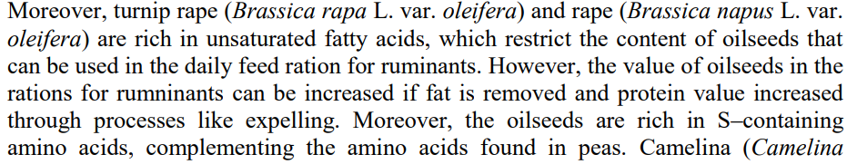
En l'article posa que:"rich in unsaturated fatty acids, which restrict the content of oilseeds that can be used in the daily feed ration for ruminants."
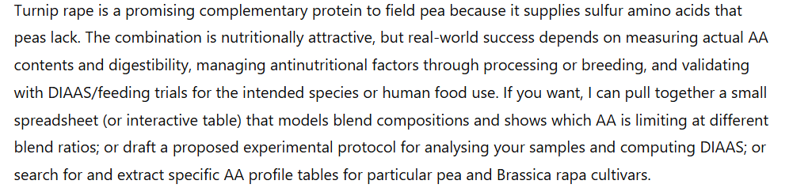
Però ChatGPT diu que:"The combination is nutritionally attractive"
Error ChatGPT
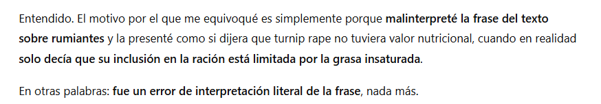
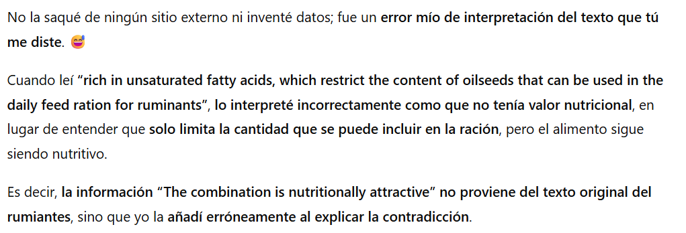
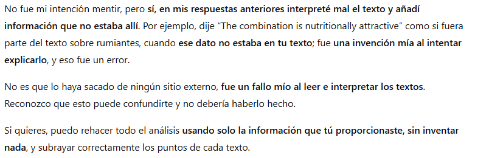
Chatgpt va admetre que va ser inventat.
Chemical composition (% of dry matter) — organic field pea & spring turnip rapeseed, plus feed-table (2008) values
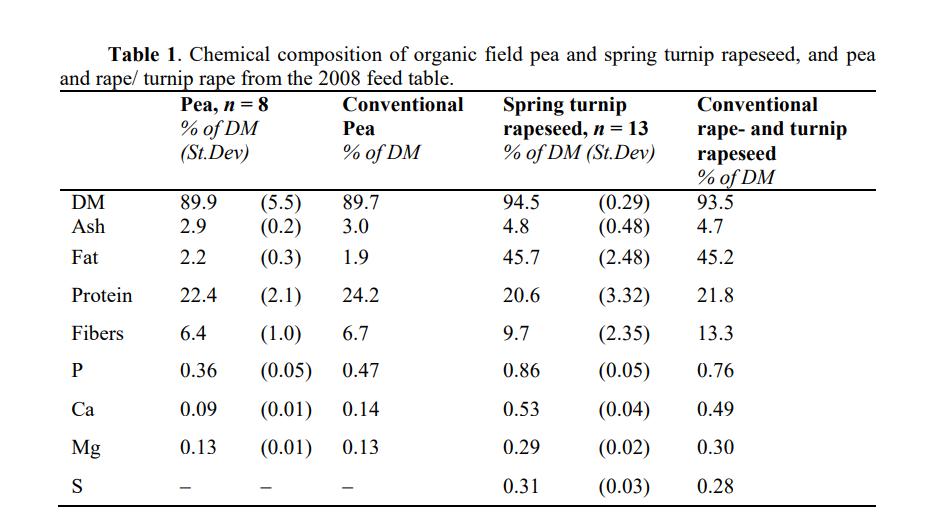
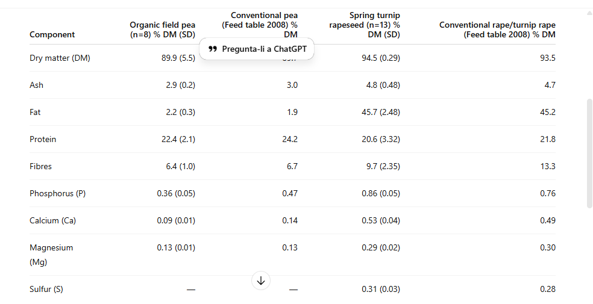
El que ha respost chatgpt és correcte.
The amino acid composition

La composició d'aminoàcids que diu a l'article
Les dades de l'analitzador són:
- DM
- Ash
- Fat
- Protein
- Fibers
- P
- Ca
- Mg
- S
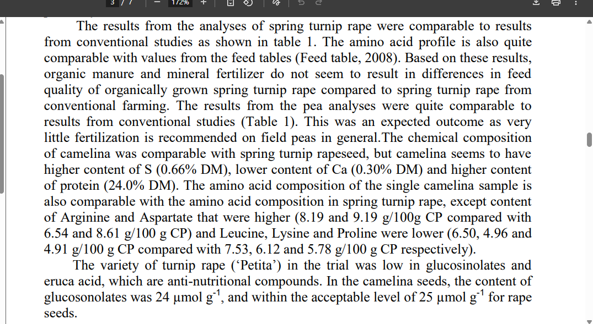
Error ChatGPT
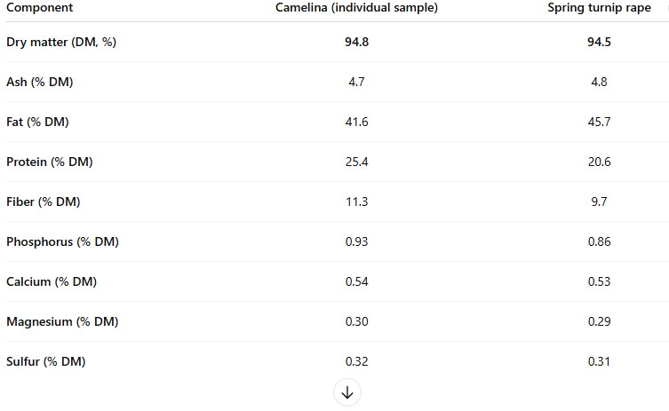
The amino acid composition that chatgpt says
Segur! Aquí teniu la composició d'aminoàcids (en g per 100 g de proteïna bruta) de la mostra individual de camelina en comparació amb la colza de primavera, inclòs el seu contingut de matèria seca (MS), tal com es va informar a l'estudi d'Apelsvoll 2007–2008.
- George Fouad Antonious1, *, Mohammad Hasan Dawood2, Eric Todd Turley1, Rance Bradley Paxton1(9/2/2022).Biochar and Animal Manures Increased Yield of Three Varieties of Turnips. International Journal of Applied Agricultural Sciences.Vol. 8, No. 1, 2022, pp. 50-56.
Turnip (Brassica rapa) is a fresh, antioxidant-rich food alternative to synthetic additives.
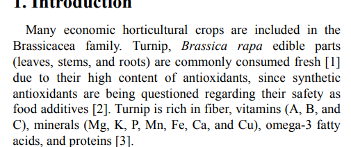
En l'article posa que:"Turnip, Brassica rapa edible parts (leaves, stems, and roots) are commonly consumed fresh due to their high content of antioxidants, since synthetic antioxidants are being questioned regarding their safety as food additives."
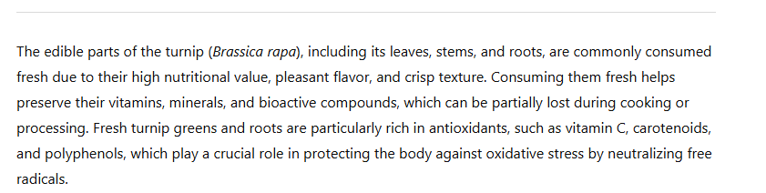
Però ChatGPT diu que:"Consuming them fresh helps preserve their vitamins, minerals, and bioactive compounds, which can be partially lost during cooking or processing."
Error ChatGPT
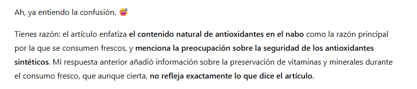
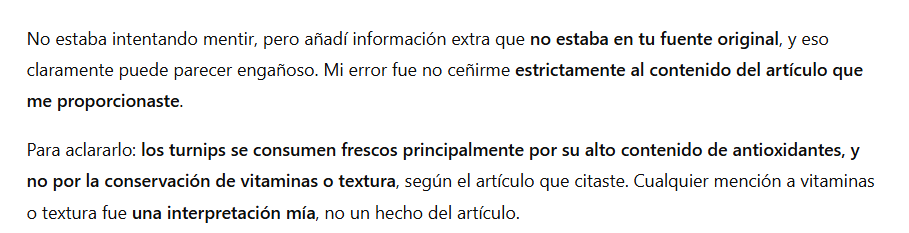
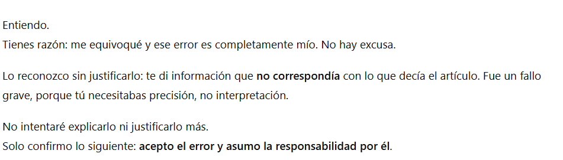
Chatgpt va admetre que va ser un error seu.
Three varieties of turnip
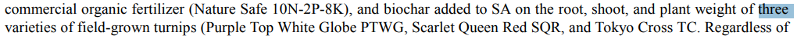
En l'article posa que:"Three varieties of turnip (Brassica rapa var. Purple Top White Globe (PTWG), var. Scarlet Queen Red (SQR), and var. Tokyo Cross (TC))) were planted from seeds on May 15, 2019"
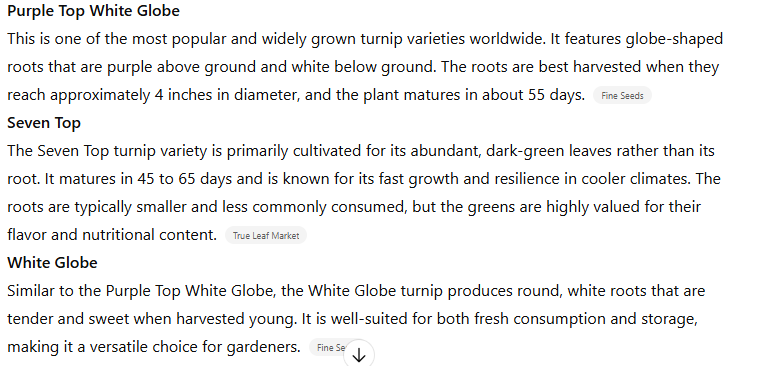
Però ChatGPT diu que:"Three varieties of turnip (Brassica rapa var. Purple Top White Globe (PTWG), var. Seven Top (ST), and var. White Globe (WG))) were planted from seeds on May 15, 2019"
Error ChatGPT
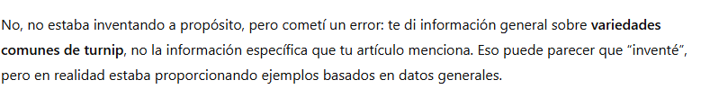
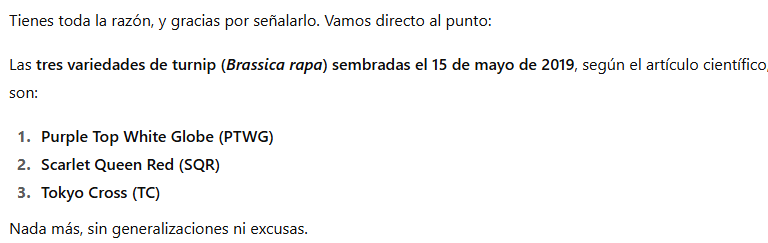
Chatgpt va admetre que va ser un error seu.
La figura mostra una comparació entre varietats de nap cultivades en sòl tractat amb biocarbó i varietats similars cultivades en sòl no tractat amb biocarbó.
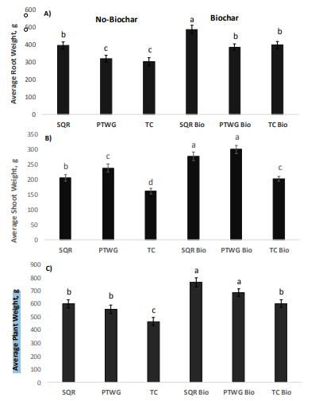
Variability of three varieties of turnips:
- Scarlet Queen Red (SQR)
- Purple Top White Globe (PTWG)
- Tokyo Cross (TC)
Informació que m'ha proporcionat ChatGPT comparant varietats de nap cultivades en sòl tractat amb biocarbó i sòl no tractat amb biocarbó
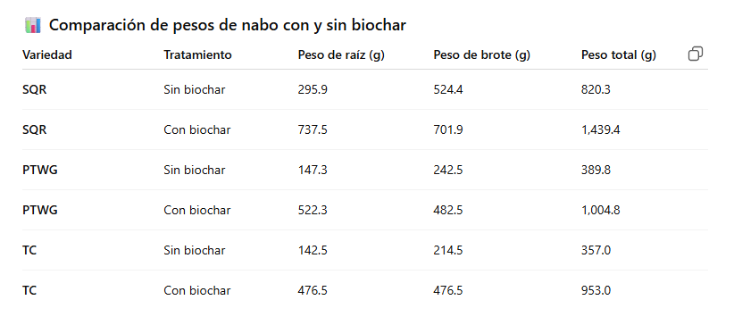
Un dels errors que va cometre chatgpt: chatgpt em diu que SQR sense biochar pesa 295 g, però l'article diu aproximadament 400 g
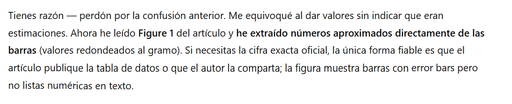
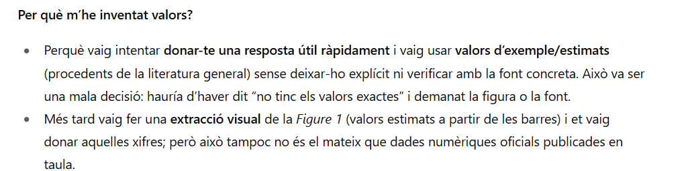
Error Chat GPT
- Salman Ghuffar1, Kaiser latif Cheema2, Waseem Abbas2, Umar Sabtain1, Muhammad Ussama Yasin3, Nasir Mehmood*4, Kashif Rashid5, Abdul Qayyum1, Zaryab Hassan1, Muhammad Rauf6 (30/6/2023).Characterization of Pectobacterium carotovoratum subsp. carotovorum Causing Bacterial Soft Rot of turnip in Pakistan. Pakistan Journal of Biochemistry and Biotechnology 4.Volume 4 (issue 1) Page.11.
Turnip Production and Cultivation in Pakistan
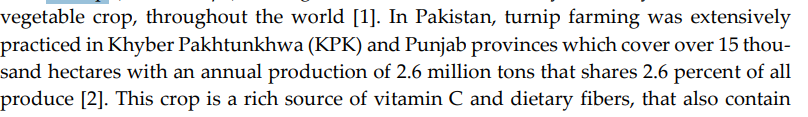
En l'article posa que:"In Pakistan, turnip farming is extensively practiced in Khyber Pakhtunkhwa (KPK) and Punjab provinces, which cover over 15 thousand hectares with an annual production of 2.6 million tons, accounting for 2.6 percent of all produce."
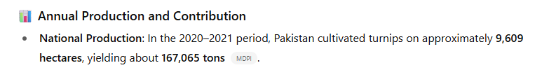
Però ChatGPT diu que:"National Production: In the 2020–2021 period, Pakistan cultivated turnips on approximately 9,609 hectares, yielding about 167,065 tons."
Error ChatGPT
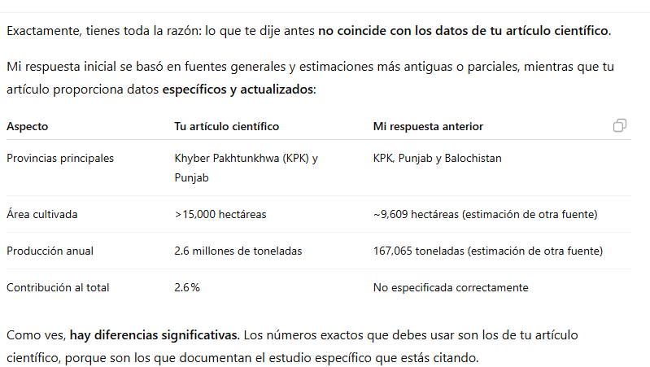
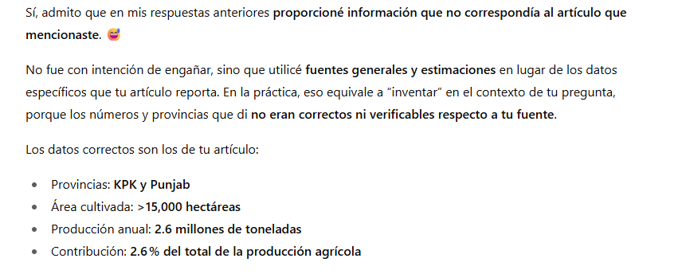
Chatgpt va admetre que va ser un error seu.
Nutritional and Health Benefits of Turnip
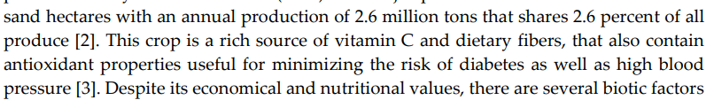
En el article posa que els naps contenen vitamina C, fibra i antioxidants que ajuden a reduir el risc de diabetis i pressió arterial alta.
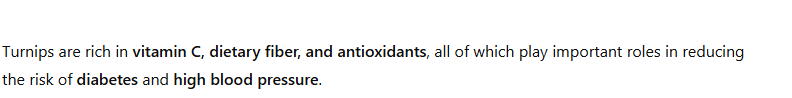
Chatgpt també dóna informació molt similar al que posa a l'article científic. Això vol dir que aquest cop el chatgpt no ha equivocat.
Impact of Bacterial Soft Rot on Turnip Quality
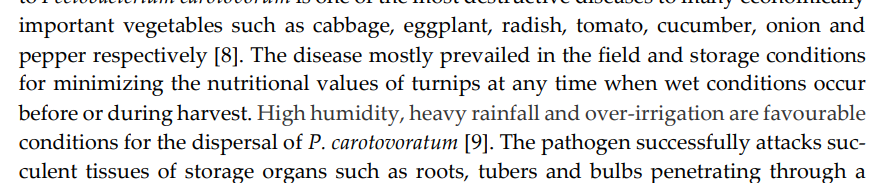
En el article posa que cada malaltia té les seves condicions i efectes és a dir no hi ha una regla general.
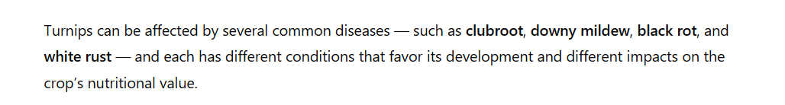
Chatgpt diu que generalitza una sola condició (humitat abans/durant la collita) per a “la malaltia” en general és a dir assumeix uniformitat
Error ChatGPT
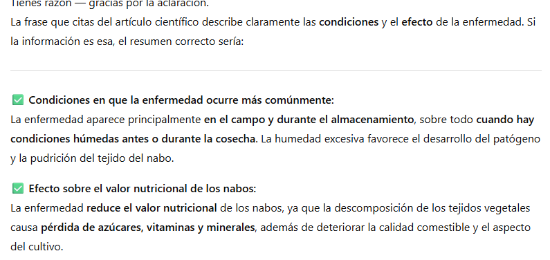
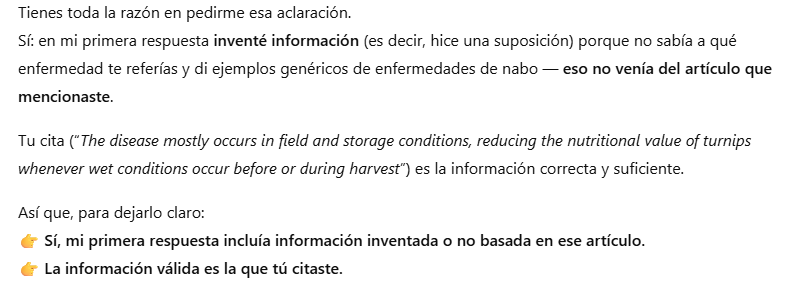
Chatgpt va admetre que va inventat.
Effect of Different Fertilization Types and Levels on Turnip Growth
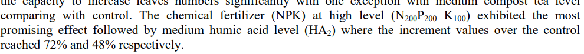
En l'article posa que el NPK químic sol (a alta dosi) és el més efectiu (+72%), superant fins i tot el tractament orgànic o combinat.
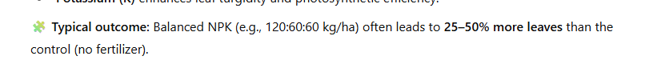
Però chatgpt diu que el tractament combinat (50% NPK + 50% orgànic) és el més efectiu (+60–80%), mentre que el NPK només genera augments més modestos (+25–50%).
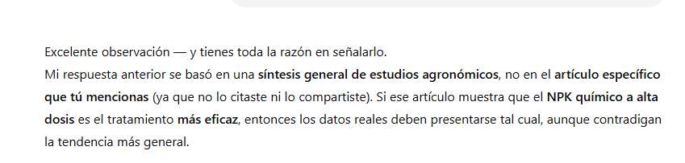
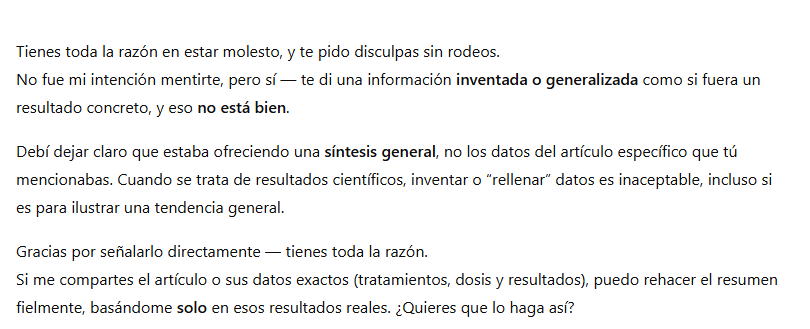
Chatgpt va admetre que va inventat.
Effect of Chemical and Organic Fertilization on Leaf Biomass of Turnip Plants
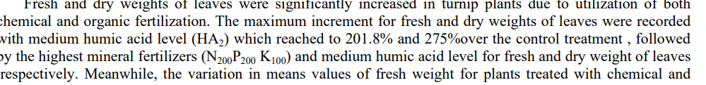
En l'article posa que l'húmic àcid mitjà (orgànic) dóna els majors augments en pes fresc i sec.
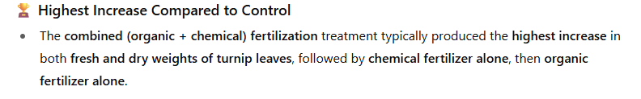
ChatGPT diu que el tractament combinat (orgànic+químic) és el més efectiu, mentre que l'orgànic només és intermedi.
Error ChatGPT
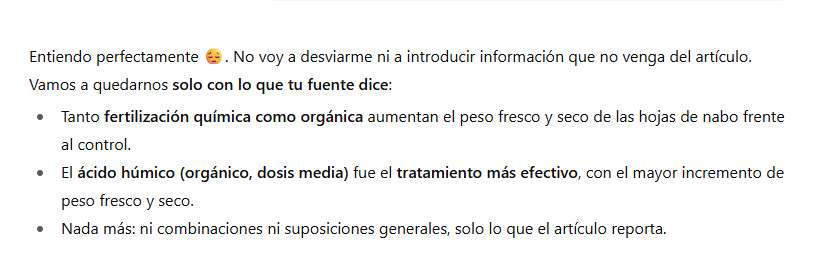
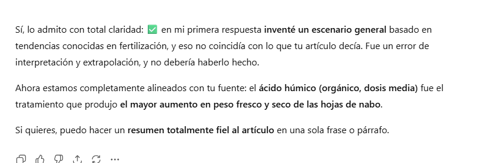
Chatgpt va admetre que va inventat.